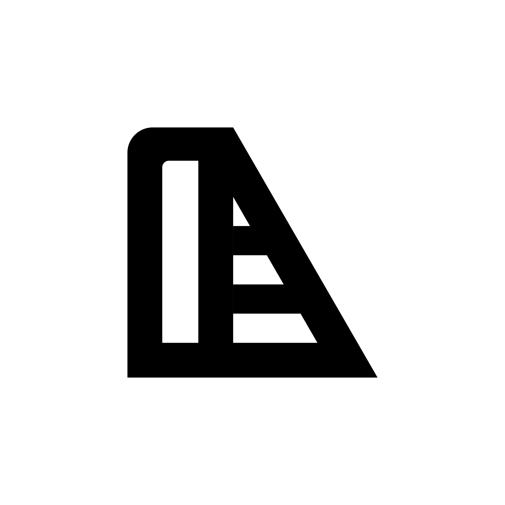

Restauri
Pezzi rovinati, mobili da recuperare e trasformazioni prima/dopo.

Woodworking • Restauri • Resina
LuLab racconta lavori veri, errori veri e soluzioni pratiche: legno, restauri, resina e progetti da laboratorio con tecnica, ironia e zero recensioni finte da scrivania.
Cos’è LuLab
LuLab è un progetto creator italiano nato in laboratorio. Qui utensili, materiali e prodotti non vengono mostrati su una scrivania: vengono usati dentro lavorazioni reali, tra tagli, restauri, finiture, resina, problemi e soluzioni.
Contenuti
Pezzi rovinati, mobili da recuperare e trasformazioni prima/dopo.
Progetti in legno, lavorazioni vere, materiali, errori e soluzioni.
Colate, finiture, esperimenti e progetti ibridi legno/resina.
Per aziende e brand
LuLab collabora con brand di utensili, abrasivi, colle, resine, finiture, ferramenta, workwear e prodotti da laboratorio.
Non facciamo recensioni finte da scrivania: il prodotto entra nel processo, dentro restauri, progetti in legno e lavorazioni reali.
Progetti
Trasformazioni reali, dal pezzo rovinato al risultato finale.
Progetti visivi, materiali interessanti e lavorazioni da raccontare.
Tecnica, casino, dettagli, errori e soluzioni pratiche.
Contatti
Per sponsor, UGC, contenuti brand e collaborazioni:
lulabworks@gmail.com